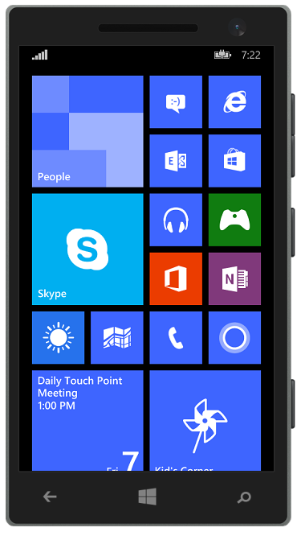
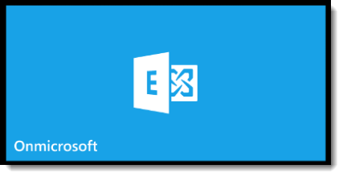
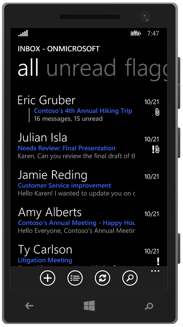
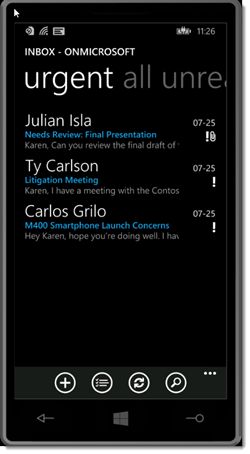
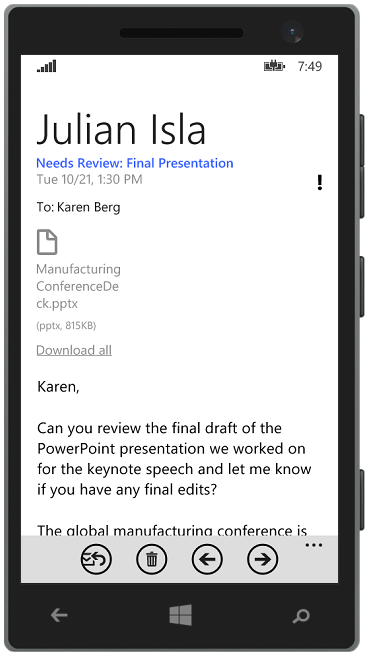
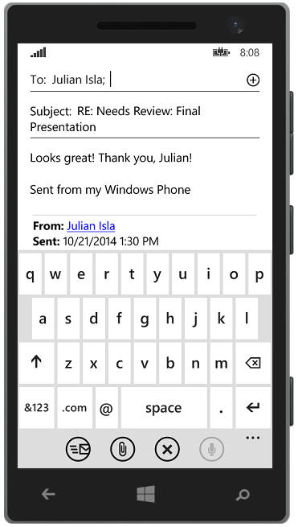
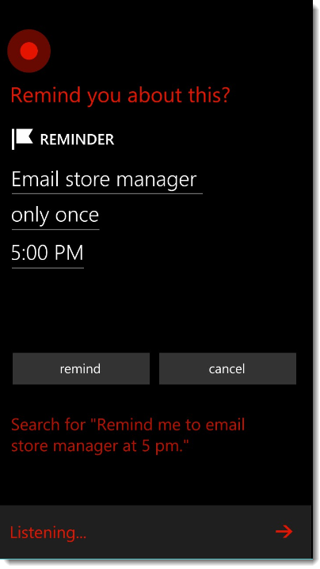

|
<< Click to Display Table of Contents >> Navigation: »No topics above this level« Catch up on emails on the go |
As Karen leaves the store, she grabs her Windows Phone 8.1 and swipes up to enter the Start screen.
Facilitation Tip:
This section is optimized for Windows Phone 8.1. Be cognizant of the fact that not all features are available on Windows Phone 8 if one needs to be used in place of a Windows Phone 8.1.
Facilitation Tip:
To deliver an online-only session, simply disregard this section.
Facilitation Tip:
Contoso could implement Windows Intune, which would allow Karen to stay productive and work securely downloading the programs she needs to the device of her choice. Additionally, Contoso would be able to ensure her device is up-to-date and add or remove programs from her device as needed.

Karen then taps the Outlook tile to catch up on any emails she missed while in the meeting.


From her main inbox, she swipes right to filter to urgent emails only.
Karen sees an urgent email from Strategy Manager Carlos Grilo titled M400 Smartphone Launch Concerns.
Facilitation Tip:
If Karen were running late to a meeting, she would be able to send an “I’ll be late” message with just a few taps. Simply tap on an appointment in the calendar and swipe right to view the meeting attendees. Directly from the attendees screen, tap on the Late icon. To send an email message to everyone attending the meeting, tap email everyone and Windows Phone will prepopulate the message. Just tap send.

Karen learns that Carlos has heard from some resellers that the M400 is getting poor reviews and presales are low. She taps Respond > Reply to let Carlos know she'll be looking into the issue. She types:
Just met with a Contoso store manager who has similar concerns. I plan to research the issue today and work on possible solutions. I'll be in touch!
Then, she taps send before flagging the email so she will remember to follow up later.
Next, Karen wants to record her thoughts from her meeting with the store manager regarding the M400 before she forgets, so she decides to get some work done at a nearby coffee shop before her long commute to the office.
She hails a cab and uses the downtime to review the rest of her email on her phone.
She taps an email marked with high importance titled Needs Review: Final Presentation from Vice President of Sales Operations Julian Isla.

In the email, Julian asks Karen to review the final draft of a PowerPoint presentation for a keynote speech that is due to conference organizers this morning.
Karen knows if she waits until she gets to the office to reply, it will be too late, so she opens the PowerPoint attachment on her phone and reviews the entire presentation during her cab ride to the coffee shop.
Karen taps respond, then reply on the email and types her approval:
Looks great! Thank you, Julian!

She taps send.
Facilitation Tip:
With Cortana, users can set location-, time- and person-based reminders to help them remember their to-do's at specific locations and times or when they send or receive calls, texts or emails to/from certain people.
As she arrives at the coffee shop, Karen asks Cortana to remind her to send the store manager an update on the issue before she leaves the office at 5 p.m. today. Cortana creates the reminder, which will help Karen maintain her positive relationship with the store manager.

Karen pays the taxi driver, places her order at the coffee shop and finds a table to continue working.